硬件与 report_ring2_stack_write_fairness.html
完全一致：六个 top die，每个是 20 节点双向 full ring × 2 plane
（10 个 AI core、8 个 D2D bridge、2 个非终端节点，逐边 hop 时延沿用单环研究）；
一个 bottom die，96 个 HA 排成 12 行 × 8 列，
6 横 + 8 纵双向 full ring，48 个挂接点即 D2D landing。
每个 top die 的 10 个 core 记为一个 group，共 6 个 group。
流量：每核 128 B burst / 4096 B stride / 64 KB tile × 4，地址按 burst 交织到全部 96 个 HA。写批次和读批次分开跑，各 122,880 笔（每核 2,048 笔），同一套地址、两次独立仿真，从不混合。 每核 outstanding 128，每个 HA 跟踪表 512 项（满了走 CHI 请求 retry，不是源端流控）。
| 项目 | 取值 | 说明 |
|---|---|---|
| 节点数 / plane 数 | 20 / 2 | 两个独立的双向闭合 full ring，共用同一套几何。与现有 top die 相同；堆叠里每个 die 仍是设计上的双 plane |
| AI core | 10 个：C0, C2, C4, C6, C8, C10, C12, C14, C16, C18 | 写发起方（CHI RN）。六个 die 共 60 个 |
| D2D bridge | 8 个：B1, B3, B5, B7, B11, B13, B15, B17 | 现有 top die 上的 memory 节点，这里改为下到 bottom die 的桥。本身不发起、不完成写 |
| 非终端节点 | N9, N19 | 在环上转发，既不是 core 也不是 bridge |
| 路由 | 最短路（链路时延之和；时延平局再比跳数，再平局 CW） | 与现有 top die 相同。出 die 的那一跳由目的 HA 绑定的 bridge 决定，不是在 top 环上选 memory |
| plane 选择 | least_occupied | 两个 plane 之间做负载均衡 |
| 每 core outstanding | 128 | 同时在飞的写事务上限：从 REQ 上环占到 Comp 回来。最长无拥塞写 RTT 是 413 cycle |
| CHI VC | REQ / RSP / DAT | REQ、RSP、DAT 三条独立 VC，各自独立信用。每条有向边每拍可同时走 1 REQ + 1 RSP + 1 DAT |
| hop 容量（每 die） | 240 flit/cycle | 20 节点 × 2 方向 × 2 plane × 3 VC，σ=1。六个 die 合计 1440 flit/cycle；top 有向边 480（单 VC） |
| 端口 | per_dir + per_vc：每 (node, plane, dir, VC) 一个上环口；two_write_leave：目的站每个来向可同时下一拍 | 与现有 top die 相同。转向仍每拍一个 tap |
| 上环队列 | 共享 FIFO 12 / (node, plane, VC)，再按方向拆 8 | shared_inj；REQ 被 outstanding 卡住时不占队头，避免堵住同核的 WriteData |
| 下环队列深度 | 12 | 每 (node, plane, VC)；PE 每拍读 1 flit |
| I-tag | reserve，t_inj=16，hold=8 | reserve：只挡会盖住饥饿源出 hop 的上游注入；捐赠者让出后预留气泡 |
| E-tag 门限 t_xfer | 1 | 偏转这么多次后升 E-tag，可走预留下环槽 |
| HA 跟踪表 | 512 | 每个 HA 同时可收的请求数；满则 RetryAck → PCrdGrant → 重发 |
| 环内 hop 时延 | 2 / 2 / 2 / 3 / 1 / 3 / 1 / 1 / 2 / 4 / 1 / 1 / 3 / 1 / 3 / 2 / 2 / 2 / 3 / 3 cycle | 现有 top die 的 RING2_LINK_LATS：节点 i 与 (i+1) mod 20 之间；最后一项是 N19 ↔ C0。两个 plane 各一份，双向同值 |
| 无向边 | hop 时延（拍） | 备注 |
|---|---|---|
| C0 — B1 | 2 | |
| B1 — C2 | 2 | |
| C2 — B3 | 2 | |
| B3 — C4 | 3 | |
| C4 — B5 | 1 | |
| B5 — C6 | 3 | |
| C6 — B7 | 1 | |
| B7 — C8 | 1 | |
| C8 — N9 | 2 | |
| N9 — C10 | 4 | |
| C10 — B11 | 1 | |
| B11 — C12 | 1 | |
| C12 — B13 | 3 | |
| B13 — C14 | 1 | |
| C14 — B15 | 3 | |
| B15 — C16 | 2 | |
| C16 — B17 | 2 | |
| B17 — C18 | 2 | |
| C18 — N19 | 3 | |
| N19 — C0 | 3 | 闭合边（N19 ↔ C0） |
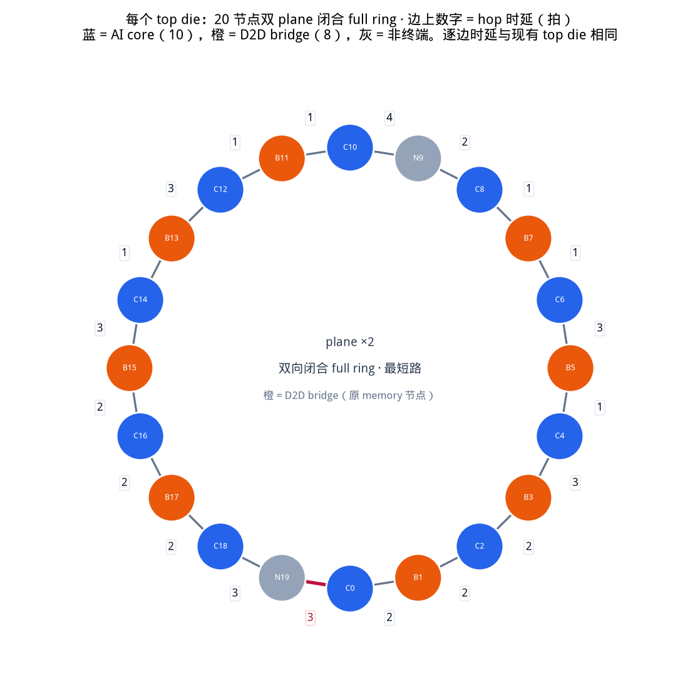
| 项目 | 取值 | 说明 |
|---|---|---|
| HA 阵列 | 96 个，12 行 × 8 列 | 写目的地（CHI completer）。没有 top-die HA |
| 挂接点 / bottom D2D | 48 | 按“2 横 × 4 列 = 8 个”一组，六个 top die 各一组。每个 D2D landing 两个独立接口：一个接该处横环，一个接所在列纵环。D2D→横、D2D→纵、横↔纵转向是三条 FIFO，只在出环 hop 上互斥 |
| D2D 链路 | 48 | 每 top die 8 条，双向，跨 SerDes。一条物理边，落地后横/纵口可同时上环 |
| bottom die NoC | 6 横 + 8 纵 full ring | full ring = 双向闭环，走较短的那一个方向 |
| 纵环长度 | 18 | 12 个 HA + 6 个挂接点交替排列。最长 9 跳（双向取短） |
| 有向链路 | 横 96 / 纵 288 / D2D 96 | 全芯片有向边 960 （含 top 480） |
| CHI 虚通道 | REQ / RSP / DAT | 与 top die 相同：REQ / RSP / DAT 三条链路独立 |
| SWAP（HPCA'22） | 开 | 横↔纵挂接点、D2D↔横、D2D↔纵：两拍 flit 互换，各走对方腾出的 hop，不进 FIFO、不加转向时延 |
| D2D 落地 buffer | 16 / (挂接点, 目标环, VC) | SWAP 和环 FIFO 都没进时的有界落地队列，下拍再参与 SWAP |
| 转向 / D2D FIFO 深度 | 64 / 128 | 唯一允许缓冲的地方；链路本身严格无缓冲 |
| HA 请求跟踪表 | 512 项 / HA | 满了走请求 retry：回 RetryAck，再发 PCrdGrant 后重传 REQ |
| 每笔写的 flit 数 | REQ 1、RSP 2、DAT 4 | WriteNoSnp 四段握手：REQ → DBIDResp → WriteData → Comp |
| workload | burst 128 B / stride 4096 B / tile 64 KB × 4（每核 2048 笔） | 二维密铺：每行 stride/burst 笔，tile/stride 行。地址按 burst 交织到 96 个 HA，每核均匀覆盖全部 HA |
| 链路 | 延迟 | 说明 |
|---|---|---|
| D2D 跨 die | 4 cycle | SerDes + 跨时钟域。落地不再另加转向时延 |
| bottom die 横环节点间 | 4 cycle | 挂接点 ↔ 挂接点，双向 full ring |
| bottom die 纵环节点间 | 6 cycle | HA ↔ 挂接点，双向 full ring |
| 挂接点转向 | 5 cycle | 横环 ↔ 纵环，经转向 FIFO；D2D 落地走自己的横/纵接口，不和转向共队列 |
| D2D bottom 双接口 | 横环口 + 该列纵环口 | SerDes 仍是一条 D2D 边；落地后可同时上横环和上纵环 |
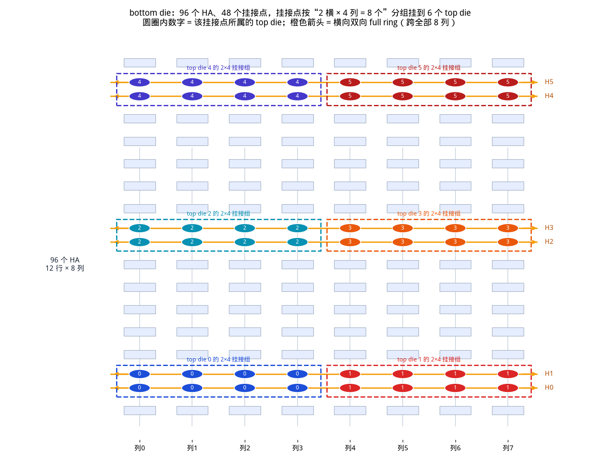
路由不是自由最短路：目的 HA 决定了出 die 的那一跳走哪个 bridge， 所以“走哪条路”是硬件规定的，不是拥塞控制能改的。
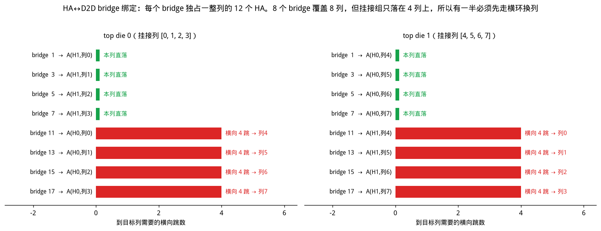
一个 4 tile 批次是 122,880 笔事务，跑一次要几十分钟， 把 4 个方案的全部 42 组配置都按这个规模跑一遍不现实。所以分两阶段：
报告里所有曲线、所有最终数字都来自阶段二；阶段一只决定谁有资格出现， 并且下面把整张网格都列出来，选择过程可以复核。 累计仿真开销 11.9 机时。
S0 是对照组：只要 outstanding 有空位、环上有 slot 就发， 没有任何窗口、赤字或授权。它给出的组间差异就是织物本身的差异。
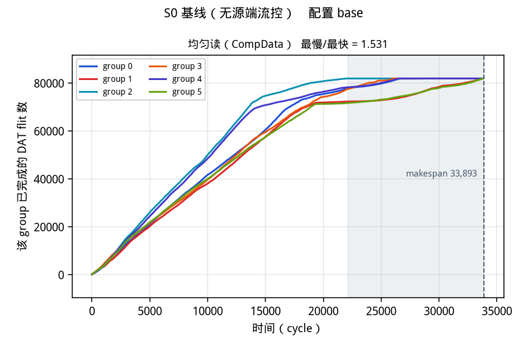
| 方案 | group 0 | group 1 | group 2 | group 3 | group 4 | group 5 | 极差 | 倍差 |
|---|---|---|---|---|---|---|---|---|
| S0 | 33,589 | 33,357 | 32,795 | 32,865 | 32,951 | 33,278 | 794 | 1.024 |
| S1 | 33,435 | 33,303 | 32,749 | 33,007 | 32,935 | 33,155 | 686 | 1.021 |
| S22 | 33,452 | 33,408 | 32,696 | 32,958 | 33,065 | 33,250 | 756 | 1.023 |
| S16G | 33,506 | 33,597 | 33,470 | 33,188 | 33,470 | 33,653 | 465 | 1.014 |
| S16 | 35,793 | 35,732 | 35,809 | 35,768 | 35,778 | 35,740 | 77 | 1.002 |
| 方案 | group 0 | group 1 | group 2 | group 3 | group 4 | group 5 | 极差 | 倍差 |
|---|---|---|---|---|---|---|---|---|
| S0 | 26,967 | 38,279 | 18,352 | 26,137 | 26,998 | 38,251 | 19,927 | 2.086 |
| S1 | 27,069 | 38,116 | 18,195 | 26,005 | 27,038 | 38,096 | 19,921 | 2.095 |
| S22 | 26,967 | 38,279 | 18,352 | 26,137 | 26,998 | 38,251 | 19,927 | 2.086 |
| S16G | 33,775 | 37,462 | 30,257 | 30,712 | 30,206 | 37,434 | 7,256 | 1.240 |
| S16 | 40,146 | 40,177 | 40,156 | 40,190 | 40,156 | 40,189 | 44 | 1.001 |
写批次六个 group 基本同时收尾（倍差 1.024），读批次却明显散开（倍差 2.086）。第 6 节给出这个差异的根因， 结论是它不是调度不公，而是结构性的。
每个 core 维持一个发送窗口，按 6 bit 拥塞总线广播回来的等级 乘性减、加性增。总线延迟 30 cycle；受控节点表让 core 看到自己路径上 每个站点的等级并取最大。
参数 sweep（1 tile，10 组配置， 写读各跑一遍，按写+读 makespan 之和排序；★ 是被 4 tile 确认后选中的配置）：
| 配置 | 参数 | 写 makespan（1 tile） | 读 makespan | 写+读 | 写 组间倍差 | 读 组间倍差 |
|---|---|---|---|---|---|---|
w32-spec ★ | window=32 | 8,942 | 8,468 | 17,410 | 1.054 | 1.633 |
w32-gentle | band=gentle, window=32 | 8,934 | 8,487 | 17,421 | 1.054 | 1.634 |
w64-spec | window=64 | 8,986 | 8,484 | 17,470 | 1.028 | 1.652 |
w64-both | scope=both, window=64 | 8,986 | 8,500 | 17,486 | 1.028 | 1.410 |
w64-gentle | band=gentle, window=64 | 9,018 | 8,514 | 17,532 | 1.049 | 1.649 |
w128-gentle | band=gentle, window=128 | 9,049 | 8,508 | 17,557 | 1.057 | 1.635 |
w64-local | path_credit=False, use_bus=False, window=64 | 9,162 | 8,479 | 17,641 | 1.055 | 1.644 |
w64-harsh | band=harsh, window=64 | 9,218 | 8,468 | 17,686 | 1.037 | 1.656 |
w64-nopath | path_credit=False, window=64 | 9,287 | 8,473 | 17,760 | 1.044 | 1.653 |
w128-spec | window=128 | 9,672 | 8,492 | 18,164 | 1.085 | 1.637 |
选中配置：w32-spec，window=32。
在 4 tile 全量批次上，写 makespan
33,436、读 makespan
38,117。
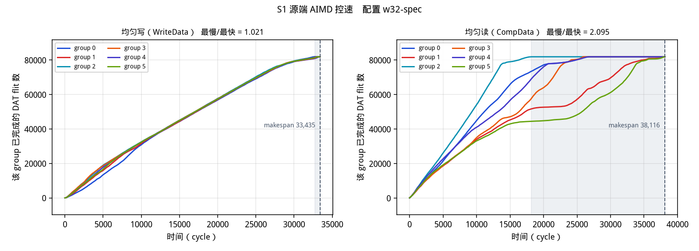
S22 记的不是拥塞等级而是赤字：每个成员在一个窗口里实际拿到的 带宽与它应得的份额之差。赤字为正（拿多了）的成员在两处让步：
dfc_dodge 项里挑一个不会加剧赤字的 flit 先上环。
这一项要在数据通路上开一个前瞻窗口，是 S22 唯一动到注入端的地方。参数 sweep（1 tile，20 组配置， 写读各跑一遍，按写+读 makespan 之和排序；★ 是被 4 tile 确认后选中的配置）：
| 配置 | 参数 | 写 makespan（1 tile） | 读 makespan | 写+读 | 写 组间倍差 | 读 组间倍差 |
|---|---|---|---|---|---|---|
core-w64-t2-h16-m3-d8 | dfc_dest_pref=False, dfc_dodge=8, dfc_grain=core, dfc_hold=16, dfc_margin=3.0 | 8,852 | 8,509 | 17,361 | 1.042 | 1.642 |
core-w64-t2-b9-d8 ★ | dfc_bus_bits=9, dfc_dest_pref=False, dfc_dodge=8, dfc_grain=core | 8,881 | 8,509 | 17,390 | 1.048 | 1.642 |
grp-ha-datrsp-d8 | dfc_act_vcs=['dat', 'rsp'], dfc_dodge=8, dfc_grain=group, dfc_scope_nodes=ha_only, dfc_thresh=0.5 | 8,883 | 8,509 | 17,392 | 1.061 | 1.642 |
grp-both-datrsp-d8 | dfc_act_vcs=['dat', 'rsp'], dfc_dodge=8, dfc_grain=group, dfc_scope_nodes=both, dfc_thresh=0.5 | 8,883 | 8,509 | 17,392 | 1.061 | 1.642 |
grp-ha-datrsp-m3-d8 | dfc_act_vcs=['dat', 'rsp'], dfc_dodge=8, dfc_grain=group, dfc_margin=3.0, dfc_scope_nodes=ha_only, dfc_thresh=0.5 | 8,883 | 8,509 | 17,392 | 1.061 | 1.642 |
grp-ha-datrsp-b12-d8 | dfc_act_vcs=['dat', 'rsp'], dfc_bus_bits=12, dfc_dodge=8, dfc_grain=group, dfc_scope_nodes=ha_only, dfc_thresh=0.5 | 8,894 | 8,498 | 17,392 | 1.052 | 1.644 |
core-w64-t2-deepq | dfc_dest_pref=False, dfc_dodge=32, dfc_grain=core, dir_inj_depth=32 | 8,909 | 8,499 | 17,408 | 1.056 | 1.661 |
core-req-t05-h16-m3-d8 | dfc_act_vcs=['dat', 'req'], dfc_bus_bits=9, dfc_dest_pref=False, dfc_dodge=8, dfc_grain=core, dfc_hold=16, dfc_margin=3.0, dfc_thresh=0.5 | 8,921 | 8,504 | 17,425 | 1.050 | 1.641 |
core-w16-t05-d8 | dfc_dest_pref=False, dfc_dodge=8, dfc_grain=core, dfc_thresh=0.5, dfc_window=16 | 8,922 | 8,509 | 17,431 | 1.053 | 1.642 |
core-w64-t05-h16-m3-d8 | dfc_dest_pref=False, dfc_dodge=8, dfc_grain=core, dfc_hold=16, dfc_margin=3.0, dfc_thresh=0.5 | 8,925 | 8,509 | 17,434 | 1.053 | 1.642 |
core-w64-t2 | dfc_dest_pref=False, dfc_grain=core | 8,926 | 8,509 | 17,435 | 1.046 | 1.642 |
grp-ha-datrsp-deepq | dfc_act_vcs=['dat', 'rsp'], dfc_dodge=32, dfc_grain=group, dfc_scope_nodes=ha_only, dfc_thresh=0.5, dir_inj_depth=32 | 8,938 | 8,499 | 17,437 | 1.057 | 1.661 |
core-req-t05-d8 | dfc_act_vcs=['dat', 'req'], dfc_bus_bits=9, dfc_dest_pref=False, dfc_dodge=8, dfc_grain=core, dfc_thresh=0.5 | 8,937 | 8,500 | 17,437 | 1.057 | 1.639 |
core-w64-t2-d8 | dfc_dest_pref=False, dfc_dodge=8, dfc_grain=core | 8,958 | 8,509 | 17,467 | 1.063 | 1.642 |
grp-ha-dat-d8 | dfc_dodge=8, dfc_grain=group, dfc_scope_nodes=ha_only, dfc_thresh=0.5 | 8,960 | 8,509 | 17,469 | 1.065 | 1.642 |
core-w64-t05-d8 | dfc_dest_pref=False, dfc_dodge=8, dfc_grain=core, dfc_thresh=0.5 | 8,981 | 8,509 | 17,490 | 1.064 | 1.642 |
grp-ha-busfree-d8 | dfc_act_vcs=['dat', 'rsp'], dfc_dodge=8, dfc_grain=group, dfc_scope_nodes=ha_only, dfc_target=2.66, dfc_thresh=0.5 | 8,991 | 8,499 | 17,490 | 1.060 | 1.642 |
grp-ha-datrsp-w16-d8 | dfc_act_vcs=['dat', 'rsp'], dfc_dodge=8, dfc_grain=group, dfc_scope_nodes=ha_only, dfc_thresh=0.5, dfc_window=16 | 9,022 | 8,509 | 17,531 | 1.065 | 1.635 |
core-busfree-d8 | dfc_dest_pref=False, dfc_dodge=8, dfc_grain=core, dfc_target=0.266, dfc_thresh=0.5 | 9,044 | 8,509 | 17,553 | 1.068 | 1.642 |
core-req-t2-d8 | dfc_act_vcs=['dat', 'req'], dfc_bus_bits=9, dfc_dest_pref=False, dfc_dodge=8, dfc_grain=core | 9,087 | 8,492 | 17,579 | 1.071 | 1.637 |
选中配置：core-w64-t2-b9-d8，dfc_bus_bits=9, dfc_dest_pref=False, dfc_dodge=8, dfc_grain=core。
在 4 tile 全量批次上，写 makespan
33,453、读 makespan
38,280。
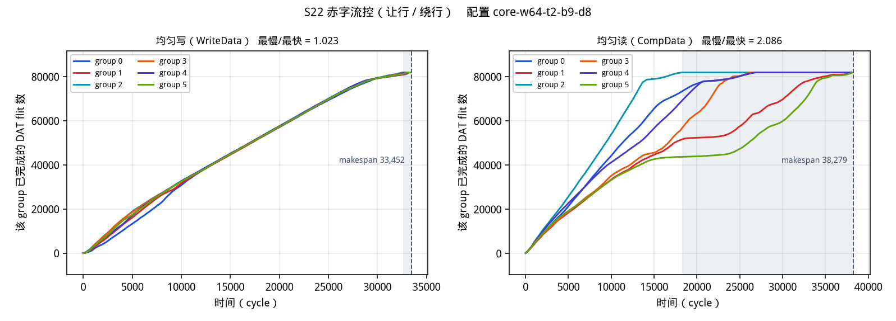
Homa 式接收端授权：HA 不再见到 REQ 就回 DBIDResp， 而是按自己的服务计数挑一个类别授权，授权本身搭在既有的 DBIDResp（写）/ CompData（读）上，不加总线、不加新报文。 原方案按 core 仲裁，每个 HA 要维护 60 项服务计数； 改进后按 group 仲裁——先选累计服务最少的 group， 组内再轮转——每个 HA 只需要 6 项，并且可选按组预留配额下限。
参数 sweep（1 tile，10 组配置， 写读各跑一遍，按写+读 makespan 之和排序；★ 是被 4 tile 确认后选中的配置）：
| 配置 | 参数 | 写 makespan（1 tile） | 读 makespan | 写+读 | 写 组间倍差 | 读 组间倍差 |
|---|---|---|---|---|---|---|
oc32-quota ★ | group_quota=True, overcommit=32 | 8,785 | 8,492 | 17,277 | 1.039 | 1.577 |
oc64 | overcommit=64 | 9,007 | 8,516 | 17,523 | 1.057 | 1.006 |
oc16-quota | group_quota=True, overcommit=16 | 8,878 | 8,679 | 17,557 | 1.020 | 1.185 |
oc8-quota | group_quota=True, overcommit=8 | 8,966 | 9,074 | 18,040 | 1.021 | 1.060 |
oc16-rr | overcommit=16, policy=round_robin | 10,085 | 8,927 | 19,012 | 1.029 | 1.011 |
oc32 | overcommit=32 | 10,254 | 8,761 | 19,015 | 1.059 | 1.005 |
oc16-noeager | eager=False, overcommit=16 | 10,307 | 9,182 | 19,489 | 1.024 | 1.006 |
oc16 | overcommit=16 | 10,391 | 9,105 | 19,496 | 1.018 | 1.006 |
oc16-bus30 | grant_lat=30, overcommit=16 | 10,178 | 9,429 | 19,607 | 1.013 | 1.008 |
oc8 | overcommit=8 | 9,661 | 10,104 | 19,765 | 1.025 | 1.007 |
选中配置：oc32-quota，group_quota=True, overcommit=32。
在 4 tile 全量批次上，写 makespan
33,654、读 makespan
37,463。
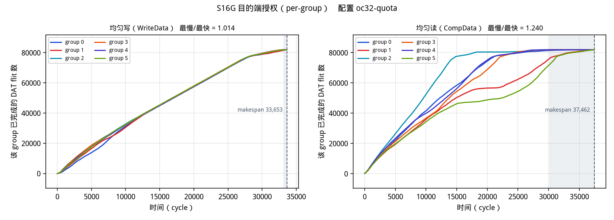
参数 sweep（1 tile，2 组配置， 写读各跑一遍，按写+读 makespan 之和排序；★ 是被 4 tile 确认后选中的配置）：
| 配置 | 参数 | 写 makespan（1 tile） | 读 makespan | 写+读 | 写 组间倍差 | 读 组间倍差 |
|---|---|---|---|---|---|---|
oc32 ★ | overcommit=32 | 10,127 | 8,915 | 19,042 | 1.039 | 1.005 |
oc16 | overcommit=16 | 10,337 | 9,665 | 20,002 | 1.021 | 1.005 |
选中配置：oc32，overcommit=32。
在 4 tile 全量批次上，写 makespan
35,810、读 makespan
40,191。
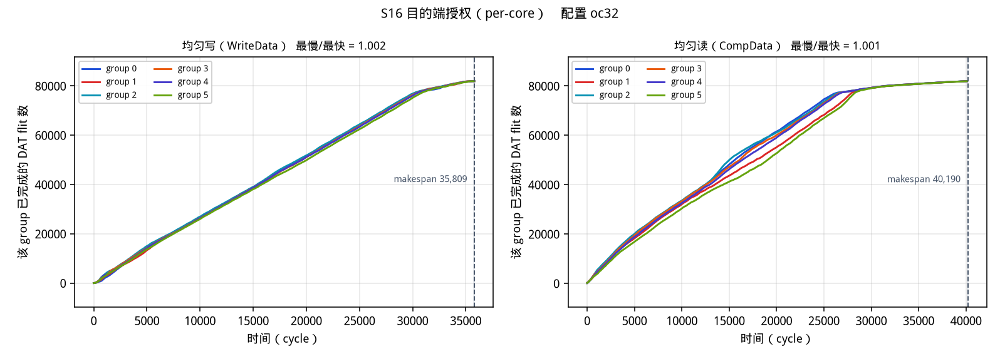
目的端授权是唯一会主动扣住授权的方案，所以它天然存在 公平与吞吐的取舍：越是把六个 group 拉齐，就越要压住本来能跑快的组。 只比 makespan 会奖励“拉得不够齐”的配置，所以下表把两个粒度的 全部确认配置放在一起，让公平度和 makespan 同时可见。
| 仲裁粒度 | 配置 | 每 HA 表项 | 写 makespan | 写 倍差 | 读 makespan | 读 倍差 |
|---|---|---|---|---|---|---|
| per-group | oc32-quota | 6 | 33,654 | 1.014 | 37,463 | 1.240 |
| per-group | oc64 | 6 | 35,551 | 1.016 | 38,645 | 1.001 |
| per-core | oc16 | 60 | 37,704 | 1.005 | 40,473 | 1.001 |
| per-core | oc32 | 60 | 35,810 | 1.002 | 40,191 | 1.001 |
oc64 把读的组间倍差压到 1.001，makespan
38,645；per-core 的 oc32 压到 1.001，
makespan 40,191。公平度相同，per-group 快
3.8%，写批次同样快
0.7%，而每个 HA 的服务计数表只有
六分之一。原因很直接：per-core 要在 60 个类别之间轮转，
一个 HA 的授权窗口被切成 60 份，谁都拿不到足够的并发把自己的
纵环喂满；per-group 只切成 6 份，组内仍是先到先服务。在比较方案之前先要知道能比出多少。下界取四项里的最大： 任意一条有向链路每 VC 每拍过 1 个 flit、任意一个站点端口每拍上/下 1 个 flit、 每类织物的总 flit·hop 除以它的链路数、以及一笔事务本身的串行时延。
| 批次 | 单链路 | 站点端口 | 织物对分 | 单事务时延 | 合成下界 | S0 实测 makespan | S0 达成率 |
|---|---|---|---|---|---|---|---|
| 均匀写 | 30,752 | 10,240 | 17,920 | 417 | 30,752 | 33,590 | 91.6% |
| 均匀读 | 33,228 | 8,192 | 12,800 | 212 | 33,228 | 38,280 | 86.8% |
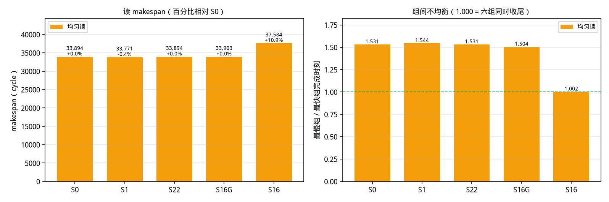
| 方案 | 配置 | 写 makespan | 对 S0 | 读 makespan | 对 S0 | 写 组间倍差 | 读 组间倍差 | 达成率 写/读 |
|---|---|---|---|---|---|---|---|---|
| S0 基线（无源端流控） | base | 33,590 | +0.0% | 38,280 | +0.0% | 1.024 | 2.086 | 91.6% / 86.8% |
| S1 源端 AIMD 控速 | w32-spec | 33,436 | -0.5% | 38,117 | -0.4% | 1.021 | 2.095 | 92.0% / 87.2% |
| S22 赤字流控（让行 / 绕行） | core-w64-t2-b9-d8 | 33,453 | -0.4% | 38,280 | +0.0% | 1.023 | 2.086 | 91.9% / 86.8% |
| S16G 目的端授权（per-group） | oc32-quota | 33,654 | +0.2% | 37,463 | -2.1% | 1.014 | 1.240 | 91.4% / 88.7% |
| S16 目的端授权（per-core） | oc32 | 35,810 | +6.6% | 40,191 | +5.0% | 1.002 | 1.001 | 85.9% / 82.7% |
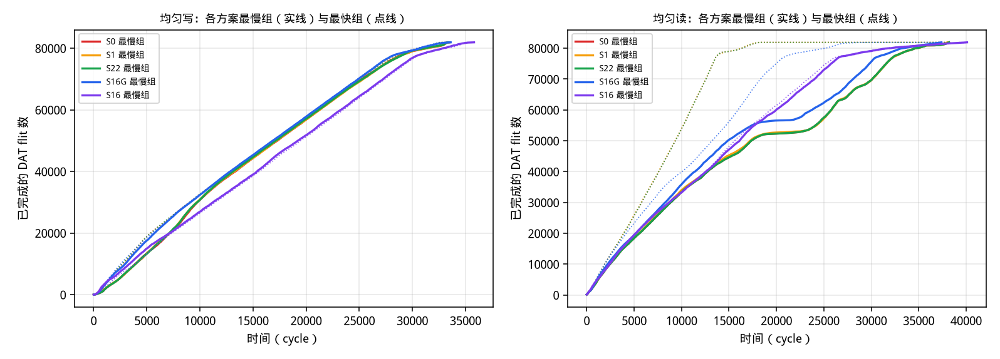
把每一笔事务的正反向路由都走一遍，按发起 core 所属 group 记账， 得到三个纯结构量：该 group 的解析 flit·hop 需求（活有多少）、 它自己那 8 条 D2D 上下行的负载（跨 die 那一跳有没有偏）、 以及它路径上最热的那条有向链路一共要驮多少 flit （一条有向链路每 VC 每拍只过 1 个 flit，所以这个数就是该 group 的 结构下界，单位直接是 cycle）。
先排除两个常见的怀疑对象。六个 group 的解析需求几乎相同 （flit·hop 最多差 4.1%）， 每个 group 自己那 8 条 D2D 上下行也是均衡的 （组内最大倍差 1.005），所以差异不在“谁的活多”， 也不在跨 die 那一跳。
剩下的量是各自路径上最热的那条有向链路要驮多少 flit： 最热 30,752、最冷 30,672，倍差 1.003； 本组在这条链路上的占比从 100.0% 到 100.0%，链路基本是本组独占。 实测 S0 完成时刻 [33589, 33357, 32795, 32865, 32951, 33278]。结构下界在六个 group 之间只差 0.3%， 而实测完成时刻差 2.4%， 量级对不上：这一批的组间先后是仲裁的随机性，不是织物的形状。 相关系数（Spearman ρ = -0.837） 是在一个几乎不变的量上算出来的，不能当作证据。
先排除两个常见的怀疑对象。六个 group 的解析需求几乎相同 （flit·hop 最多差 4.1%）， 每个 group 自己那 8 条 D2D 上下行也是均衡的 （组内最大倍差 1.005），所以差异不在“谁的活多”， 也不在跨 die 那一跳。
剩下的量是各自路径上最热的那条有向链路要驮多少 flit： 最热 33,228、最冷 23,072，倍差 1.440； 本组在这条链路上的占比从 10.3% 到 55.6%，占比低意味着这条链路主要是别人的流量。 实测 S0 完成时刻 [26967, 38279, 18352, 26137, 26998, 38251]。结构下界在六个 group 之间差 44%， 实测完成时刻差 109%，两者同向且同量级： Spearman ρ = 0.828 （Pearson 0.691）。 “本组占比”这一项的相关性同样强而反向 （ρ = -0.812）—— 一个 group 在自己最热的那条链路上占得越少，它排在越后面完成， 因为它等的是别人的 flit 过完。 相比之下“活的多少”几乎不解释什么 （Pearson 0.690， 而六个 group 的解析需求本来就只差 4.1%）。
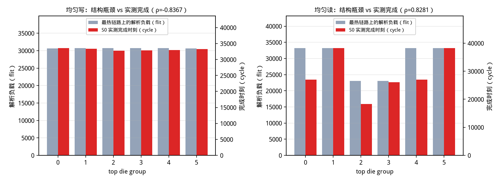
| group | 解析 flit·hop | 按织物拆分 | 最热链路 | 该链路解析负载 | 其中本组占比 | D2D 下行/上行 flit | 组内 8 条 D2D 上行倍差 |
|---|---|---|---|---|---|---|---|
| group 0 | 1,838,970 | d2d=143,360 / h=286,272 / top=716,464 / v=692,874 | h:dat | 30,672 | 100.0% | 102,400 / 40,960 | 1.005 |
| group 1 | 1,839,082 | d2d=143,360 / h=286,720 / top=716,128 / v=692,874 | h:dat | 30,736 | 100.0% | 102,400 / 40,960 | 1.005 |
| group 2 | 1,768,200 | d2d=143,360 / h=287,168 / top=716,464 / v=621,208 | h:dat | 30,752 | 100.0% | 102,400 / 40,960 | 1.005 |
| group 3 | 1,768,872 | d2d=143,360 / h=287,168 / top=717,136 / v=621,208 | h:dat | 30,752 | 100.0% | 102,400 / 40,960 | 1.005 |
| group 4 | 1,840,426 | d2d=143,360 / h=286,720 / top=717,472 / v=692,874 | h:dat | 30,736 | 100.0% | 102,400 / 40,960 | 1.005 |
| group 5 | 1,839,642 | d2d=143,360 / h=286,272 / top=717,136 / v=692,874 | h:dat | 30,672 | 100.0% | 102,400 / 40,960 | 1.005 |
| group | 解析 flit·hop | 按织物拆分 | 最热链路 | 该链路解析负载 | 其中本组占比 | D2D 下行/上行 flit | 组内 8 条 D2D 上行倍差 |
|---|---|---|---|---|---|---|---|
| group 0 | 1,313,550 | d2d=102,400 / h=204,480 / top=511,760 / v=494,910 | h:dat | 33,228 | 38.5% | 20,480 / 81,920 | 1.005 |
| group 1 | 1,313,630 | d2d=102,400 / h=204,800 / top=511,520 / v=494,910 | h:dat | 33,228 | 10.3% | 20,480 / 81,920 | 1.005 |
| group 2 | 1,263,000 | d2d=102,400 / h=205,120 / top=511,760 / v=443,720 | h:dat | 23,072 | 55.6% | 20,480 / 81,920 | 1.005 |
| group 3 | 1,263,480 | d2d=102,400 / h=205,120 / top=512,240 / v=443,720 | h:dat | 23,072 | 18.6% | 20,480 / 81,920 | 1.005 |
| group 4 | 1,314,590 | d2d=102,400 / h=204,800 / top=512,480 / v=494,910 | h:dat | 33,228 | 38.5% | 20,480 / 81,920 | 1.005 |
| group 5 | 1,314,030 | d2d=102,400 / h=204,480 / top=512,240 / v=494,910 | h:dat | 33,228 | 12.8% | 20,480 / 81,920 | 1.005 |
面积按 FF 等效计：总线是每个要听的站点latch 一份广播； 表是每个站点对其他成员的视图；计数器是窗口、赤字、服务计数； 算术把比较器、加法器和求均值的归约树折算成面积； 队列是超出现有注入队列深度的那部分，按 flit 宽度 288 bit 计。 凡是仿真能测的量都用实测值定尺寸（S1 的路径表用实测平均路径节点数， S22 的赤字表用它实际跑的成员数，S16 的服务表用它的仲裁粒度）。
| 方案 | 配置 | 合计 FF 等效 | 总线 | 表 | 计数器 | 算术 | 队列 | 说明 |
|---|---|---|---|---|---|---|---|---|
| S0 基线（无源端流控） | base | 0 | 0 | 0 | 0 | 0 | 0 | 没有任何新增状态：核只看 outstanding 窗口和环上有没有空槽。 |
| S16G 目的端授权（per-group） | oc32-quota | 26,496 | 0 | 11,520 | 1,536 | 13,440 | 0 | 每个 HA 一张 6 项服务计数表（按 group），仲裁是 5 级比较；授权本身走已有的 DBIDResp/CompData，不加总线、不加缓存（承诺峰值 32 笔，S0 也要同样的落地缓存） |
| S1 源端 AIMD 控速 | w32-spec | 108,084 | 1,584 | 50,400 | 900 | 55,200 | 0 | 每个 core 一份受控节点表，实测平均 139.9 项 × 6 bit；6-bit 拥塞总线在 264 个站点各latch 一份 |
| S22 赤字流控（让行 / 绕行） | core-w64-t2-b9-d8 | 189,540 | 540 | 32,400 | 600 | 156,000 | 0 | 按 core记赤字，表 60 项 × 9 bit，落在 60 个站点；总线 9 bit；前瞻 8 项要 8 个比较器 |
| S16 目的端授权（per-core） | oc32 | 233,856 | 0 | 115,200 | 1,536 | 117,120 | 0 | 每个 HA 一张 60 项服务计数表（按 core），仲裁是 59 级比较；授权本身走已有的 DBIDResp/CompData，不加总线、不加缓存（承诺峰值 32 笔，S0 也要同样的落地缓存） |
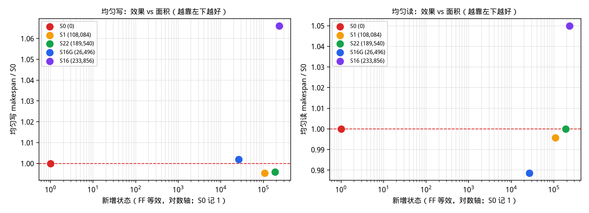
w32-spec）：写 -0.5%、读 -0.4%，两个批次都在 1% 以内，等于没动；读的组间倍差仍是 2.095，没有改善；新增状态 108,084 FF 等效。core-w64-t2-b9-d8）：写 -0.4%、读 +0.0%，两个批次都在 1% 以内，等于没动；读的组间倍差仍是 2.086，没有改善；新增状态 189,540 FF 等效。oc32-quota）：写 +0.2%、读 -2.1%，写持平、读更快；读的组间倍差从 2.086 降到 1.240；新增状态 26,496 FF 等效。oc32）：写 +6.6%、读 +5.0%，两个批次都更慢；读的组间倍差从 2.086 降到 1.001；新增状态 233,856 FF 等效。§0–§6 的硬件一字未改。这一节单独换了一套加宽 setup，
FIFO 深度全部不动（转向 64 / D2D 128 / 落地 16 / 注入 12+8），
只动 outstanding、D2D 链路宽、bridge 上环宽、H↔V 转向宽，
以及必要时的横/纵/top / 注入 / 弹出宽。
目标是 S0 在同一套均匀写 / 均匀读上，对该 setup 自己的解析下界
达成率都 ≥ 97%。选中的配置是 oc224-d2d2-br2-turn4：bridge 上环宽 = 2，outstanding = 224，D2D 链路宽 = 2，H↔V 转向宽 = 4。
还没两边都到 97%，★ 是目前最差一侧达成率最高的加宽组合。单侧写最好是 d2d2-br2-turn2 95.6%；单侧读最好是 d2d2-br2-h2-turn2 99.2%。
| 项目 | §0 原 setup | 加宽 setup（oc224-d2d2-br2-turn4） | 变化 |
|---|---|---|---|
| 每核 outstanding | 128 | 224 | 128 → 224 |
| D2D 链路宽（flit/拍/VC） | 1 | 2 | 1 → 2 |
| bridge / 落地 上环宽 | 1 | 2 | 1 → 2 |
| H↔V 转向宽（离开 tap + FIFO 下环） | 1 | 4 | 1 → 4 |
| 底 die 横环宽 | 1 | 1 | — |
| 底 die 纵环宽 | 1 | 1 | — |
| top die 环宽 | 1 | 1 | — |
| 注入口宽 | 1 | 1 | — |
| 弹出宽 | 1 | 1 | — |
| 转向 FIFO（未改） | 64 | 64 | — |
| D2D FIFO（未改） | 128 | 128 | — |
| 落地 buffer（未改） | 16 | 16 | — |
| 注入 FIFO（未改） | 12 | 12 | — |
| 配置 | 加宽项 | 写 makespan（1 tile） | 写达成率 | 读 makespan | 读达成率 |
|---|---|---|---|---|---|
base | 与 §0 相同（未加宽） | 8,960 | 86.1% | 8,509 | 97.2% |
oc256 | outstanding = 256 | 9,024 | 85.5% | 8,581 | 96.4% |
d2d2 | D2D 链路宽 = 2 | 9,011 | 85.6% | 8,510 | 97.2% |
br2 | bridge 上环宽 = 2 | 9,047 | 85.2% | 8,504 | 97.2% |
oc256-d2d2 | outstanding = 256，D2D 链路宽 = 2 | 9,046 | 85.2% | 8,570 | 96.5% |
oc256-d2d2-br2 | bridge 上环宽 = 2，outstanding = 256，D2D 链路宽 = 2 | 9,051 | 85.2% | 8,620 | 95.9% |
oc256-d2d2-br2-inj2 | bridge 上环宽 = 2，outstanding = 256，D2D 链路宽 = 2，注入口宽 = 2 | 9,017 | 85.5% | 8,632 | 95.8% |
oc256-d2d2-br2-h2 | bridge 上环宽 = 2，outstanding = 256，D2D 链路宽 = 2，横环宽 = 2 | 7,075 | 72.6% | 5,110 | 96.2% |
oc256-d2d2-br2-h2-v2 | bridge 上环宽 = 2，outstanding = 256，D2D 链路宽 = 2，横环宽 = 2，纵环宽 = 2 | 5,628 | 68.5% | 4,761 | 86.8% |
oc256-all2 | bridge 上环宽 = 2，outstanding = 256，D2D 链路宽 = 2，弹出宽 = 2，横环宽 = 2，注入口宽 = 2，top 环宽 = 2，纵环宽 = 2 | 5,528 | 69.8% | 4,838 | 85.5% |
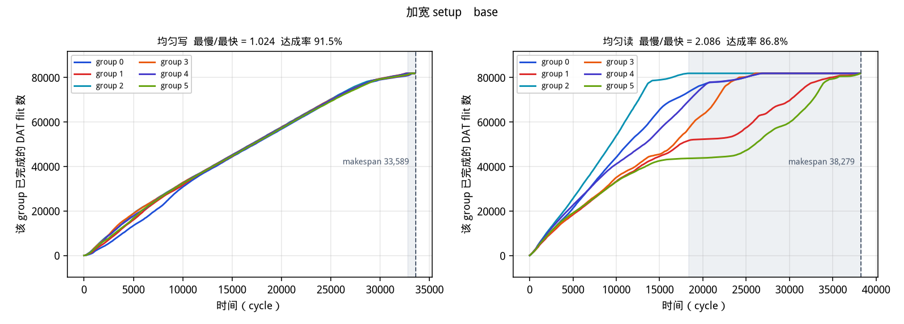

oc256-d2d2-br2：写 34,520 / 30,752 = 89.1%，读 34,625 / 33,228 = 96.0%oc256-d2d2-br2-turn2：写 33,042 / 30,752 = 93.1%，读 34,813 / 33,228 = 95.5%oc256-d2d2-br2-h2：写 23,728 / 20,496 = 86.4%，读 19,853 / 19,636 = 98.9%，写组间倍差 1.429oc256-d2d2-br2-h2-turn2：写 24,643 / 20,496 = 83.2%，读 19,789 / 19,636 = 99.2%，写组间倍差 1.502oc256-d2d2-br2-h2-v2：写 18,454 / 15,376 = 83.3%，读 19,325 / 16,614 = 86.0%oc256-all2：写 18,177 / 15,376 = 84.6%，读 19,417 / 16,614 = 85.6%d2d2-br2-turn2：写 32,153 / 30,752 = 95.6%，读 38,574 / 33,228 = 86.1%oc256-d2d2-br2-turn2-inj2：写 33,000 / 30,752 = 93.2%，读 34,940 / 33,228 = 95.1%oc256-d2d2-br2-turn4：写 32,867 / 30,752 = 93.6%，读 35,075 / 33,228 = 94.7%oc256-d2d2-br2-turn2-inj2-ej2：写 32,908 / 30,752 = 93.5%，读 34,850 / 33,228 = 95.3%oc256-all2-turn2：写 17,489 / 15,376 = 87.9%，读 17,596 / 16,614 = 94.4%oc160-d2d2-br2-turn2：写 32,319 / 30,752 = 95.2%，读 36,600 / 33,228 = 90.8%oc192-d2d2-br2-turn2：写 32,577 / 30,752 = 94.4%，读 35,493 / 33,228 = 93.6%oc224-d2d2-br2-turn2：写 32,799 / 30,752 = 93.8%，读 34,840 / 33,228 = 95.4%oc256-d2d4-br4-turn2：写 33,063 / 30,752 = 93.0%，读 34,896 / 33,228 = 95.2%oc224-d2d2-br2-turn4：写 32,696 / 30,752 = 94.0%，读 35,146 / 33,228 = 94.5%oc224-d2d2-br2-h2-turn2：写 23,803 / 20,496 = 86.1%，读 19,805 / 19,636 = 99.2%，写组间倍差 1.612d2d2-br2-h2-turn2：写 28,119 / 20,496 = 72.9%，读 19,786 / 19,636 = 99.2%，写组间倍差 2.145oc192-d2d2-br2-turn4：写 32,503 / 30,752 = 94.6%，读 35,500 / 33,228 = 93.6%oc224-all2-turn2：写 18,361 / 15,376 = 83.7%，读 17,759 / 16,614 = 93.5%| 配置 | 加宽项 | 写 makespan | 写下界 | 写达成率 | 读 makespan | 读下界 | 读达成率 |
|---|---|---|---|---|---|---|---|
| base | 与 §0 相同（未加宽） | 33,590 | 30,752 | 91.5% | 38,280 | 33,228 | 86.8% |
| oc256-d2d2-br2 | bridge 上环宽 = 2，outstanding = 256，D2D 链路宽 = 2 | 34,520 | 30,752 | 89.1% | 34,625 | 33,228 | 96.0% |
| oc256-d2d2-br2-turn2 | bridge 上环宽 = 2，outstanding = 256，D2D 链路宽 = 2，H↔V 转向宽 = 2 | 33,042 | 30,752 | 93.1% | 34,813 | 33,228 | 95.5% |
| oc256-d2d2-br2-h2 | bridge 上环宽 = 2，outstanding = 256，D2D 链路宽 = 2，横环宽 = 2 | 23,728 | 20,496 | 86.4% | 19,853 | 19,636 | 98.9% |
| oc256-d2d2-br2-h2-turn2 | bridge 上环宽 = 2，outstanding = 256，D2D 链路宽 = 2，横环宽 = 2，H↔V 转向宽 = 2 | 24,643 | 20,496 | 83.2% | 19,789 | 19,636 | 99.2% |
| oc256-d2d2-br2-h2-v2 | bridge 上环宽 = 2，outstanding = 256，D2D 链路宽 = 2，横环宽 = 2，纵环宽 = 2 | 18,454 | 15,376 | 83.3% | 19,325 | 16,614 | 86.0% |
| oc256-all2 | bridge 上环宽 = 2，outstanding = 256，D2D 链路宽 = 2，弹出宽 = 2，横环宽 = 2，注入口宽 = 2，top 环宽 = 2，纵环宽 = 2 | 18,177 | 15,376 | 84.6% | 19,417 | 16,614 | 85.6% |
| d2d2-br2-turn2 | bridge 上环宽 = 2，D2D 链路宽 = 2，H↔V 转向宽 = 2 | 32,153 | 30,752 | 95.6% | 38,574 | 33,228 | 86.1% |
| oc256-d2d2-br2-turn2-inj2 | bridge 上环宽 = 2，outstanding = 256，D2D 链路宽 = 2，注入口宽 = 2，H↔V 转向宽 = 2 | 33,000 | 30,752 | 93.2% | 34,940 | 33,228 | 95.1% |
| oc256-d2d2-br2-turn4 | bridge 上环宽 = 2，outstanding = 256，D2D 链路宽 = 2，H↔V 转向宽 = 4 | 32,867 | 30,752 | 93.6% | 35,075 | 33,228 | 94.7% |
| oc256-d2d2-br2-turn2-inj2-ej2 | bridge 上环宽 = 2，outstanding = 256，D2D 链路宽 = 2，弹出宽 = 2，注入口宽 = 2，H↔V 转向宽 = 2 | 32,908 | 30,752 | 93.5% | 34,850 | 33,228 | 95.3% |
| oc256-all2-turn2 | bridge 上环宽 = 2，outstanding = 256，D2D 链路宽 = 2，弹出宽 = 2，横环宽 = 2，注入口宽 = 2，top 环宽 = 2，H↔V 转向宽 = 2，纵环宽 = 2 | 17,489 | 15,376 | 87.9% | 17,596 | 16,614 | 94.4% |
| oc160-d2d2-br2-turn2 | bridge 上环宽 = 2，outstanding = 160，D2D 链路宽 = 2，H↔V 转向宽 = 2 | 32,319 | 30,752 | 95.2% | 36,600 | 33,228 | 90.8% |
| oc192-d2d2-br2-turn2 | bridge 上环宽 = 2，outstanding = 192，D2D 链路宽 = 2，H↔V 转向宽 = 2 | 32,577 | 30,752 | 94.4% | 35,493 | 33,228 | 93.6% |
| oc224-d2d2-br2-turn2 | bridge 上环宽 = 2，outstanding = 224，D2D 链路宽 = 2，H↔V 转向宽 = 2 | 32,799 | 30,752 | 93.8% | 34,840 | 33,228 | 95.4% |
| oc256-d2d4-br4-turn2 | bridge 上环宽 = 4，outstanding = 256，D2D 链路宽 = 4，H↔V 转向宽 = 2 | 33,063 | 30,752 | 93.0% | 34,896 | 33,228 | 95.2% |
| oc224-d2d2-br2-turn4 ★ | bridge 上环宽 = 2，outstanding = 224，D2D 链路宽 = 2，H↔V 转向宽 = 4 | 32,696 | 30,752 | 94.0% | 35,146 | 33,228 | 94.5% |
| oc224-d2d2-br2-h2-turn2 | bridge 上环宽 = 2，outstanding = 224，D2D 链路宽 = 2，横环宽 = 2，H↔V 转向宽 = 2 | 23,803 | 20,496 | 86.1% | 19,805 | 19,636 | 99.2% |
| d2d2-br2-h2-turn2 | bridge 上环宽 = 2，D2D 链路宽 = 2，横环宽 = 2，H↔V 转向宽 = 2 | 28,119 | 20,496 | 72.9% | 19,786 | 19,636 | 99.2% |
| oc192-d2d2-br2-turn4 | bridge 上环宽 = 2，outstanding = 192，D2D 链路宽 = 2，H↔V 转向宽 = 4 | 32,503 | 30,752 | 94.6% | 35,500 | 33,228 | 93.6% |
| oc224-all2-turn2 | bridge 上环宽 = 2，outstanding = 224，D2D 链路宽 = 2，弹出宽 = 2，横环宽 = 2，注入口宽 = 2，top 环宽 = 2，H↔V 转向宽 = 2，纵环宽 = 2 | 18,361 | 15,376 | 83.7% | 17,759 | 16,614 | 93.5% |
下界不动时（横/纵/top 仍是 1，D2D 和 bridge 已×2），写要低 outstanding，读要高 outstanding。两边的最优点中间没有同时 ≥ 97% 的交叉。97% 对应写 makespan ≤ 31,703、读 ≤ 34,256。
| outstanding | 转向宽 | 配置 | 写 makespan | 写达成率 | 读 makespan | 读达成率 | 写组间倍差 | 读组间倍差 |
|---|---|---|---|---|---|---|---|---|
| 128 | 2 | d2d2-br2-turn2 | 32,153 | 95.6% | 38,574 | 86.1% | 1.004 | 1.842 |
| 160 | 2 | oc160-d2d2-br2-turn2 | 32,319 | 95.2% | 36,600 | 90.8% | 1.003 | 1.722 |
| 192 | 2 | oc192-d2d2-br2-turn2 | 32,577 | 94.4% | 35,493 | 93.6% | 1.007 | 1.402 |
| 192 | 4 | oc192-d2d2-br2-turn4 | 32,503 | 94.6% | 35,500 | 93.6% | 1.006 | 1.405 |
| 224 | 2 | oc224-d2d2-br2-turn2 | 32,799 | 93.8% | 34,840 | 95.4% | 1.006 | 1.204 |
| 224 | 4 | oc224-d2d2-br2-turn4 ★ | 32,696 | 94.0% | 35,146 | 94.5% | 1.005 | 1.231 |
| 256 | 1 | oc256-d2d2-br2 | 34,520 | 89.1% | 34,625 | 96.0% | 1.005 | 1.143 |
| 256 | 2 | oc256-d2d2-br2-turn2 | 33,042 | 93.1% | 34,813 | 95.5% | 1.006 | 1.142 |
| 256 | 2 | oc256-d2d2-br2-turn2-inj2 | 33,000 | 93.2% | 34,940 | 95.1% | 1.003 | 1.140 |
| 256 | 2 | oc256-d2d2-br2-turn2-inj2-ej2 | 32,908 | 93.5% | 34,850 | 95.3% | 1.006 | 1.141 |
| 256 | 4 | oc256-d2d2-br2-turn4 | 32,867 | 93.6% | 35,075 | 94.7% | 1.003 | 1.151 |
| 配置 | 下界怎么动 | 写下界 | 写 makespan | 写达成率 | 读下界 | 读 makespan | 读达成率 |
|---|---|---|---|---|---|---|---|
oc256-d2d2-br2 | 横环仍是 1，下界停在 §0 的 h:dat | 30,752 | 34,520 | 89.1% | 33,228 | 34,625 | 96.0% |
oc256-d2d2-br2-h2 | 横环×2 之后写下界改由 v:dat 决定 | 20,496 | 23,728 | 86.4% | 19,636 | 19,853 | 98.9% |
oc256-d2d2-br2-h2-v2 | 再把纵环×2，下界回到更窄的 h:dat | 15,376 | 18,454 | 83.3% | 16,614 | 19,325 | 86.0% |
oc256-all2 | 四条织物一起×2，下界再掉一档 | 15,376 | 18,177 | 84.6% | 16,614 | 19,417 | 85.6% |
| 配置 | 参数 | 写 makespan（1 tile） | 读 makespan | 写+读 | 写 组间倍差 | 读 组间倍差 |
|---|---|---|---|---|---|---|
w32-spec ★ | window=32 | 8,942 | 8,468 | 17,410 | 1.054 | 1.633 |
w32-gentle | band=gentle, window=32 | 8,934 | 8,487 | 17,421 | 1.054 | 1.634 |
w64-spec | window=64 | 8,986 | 8,484 | 17,470 | 1.028 | 1.652 |
w64-both | scope=both, window=64 | 8,986 | 8,500 | 17,486 | 1.028 | 1.410 |
w64-gentle | band=gentle, window=64 | 9,018 | 8,514 | 17,532 | 1.049 | 1.649 |
w128-gentle | band=gentle, window=128 | 9,049 | 8,508 | 17,557 | 1.057 | 1.635 |
w64-local | path_credit=False, use_bus=False, window=64 | 9,162 | 8,479 | 17,641 | 1.055 | 1.644 |
w64-harsh | band=harsh, window=64 | 9,218 | 8,468 | 17,686 | 1.037 | 1.656 |
w64-nopath | path_credit=False, window=64 | 9,287 | 8,473 | 17,760 | 1.044 | 1.653 |
w128-spec | window=128 | 9,672 | 8,492 | 18,164 | 1.085 | 1.637 |
| 配置 | 参数 | 写 makespan（1 tile） | 读 makespan | 写+读 | 写 组间倍差 | 读 组间倍差 |
|---|---|---|---|---|---|---|
core-w64-t2-h16-m3-d8 | dfc_dest_pref=False, dfc_dodge=8, dfc_grain=core, dfc_hold=16, dfc_margin=3.0 | 8,852 | 8,509 | 17,361 | 1.042 | 1.642 |
core-w64-t2-b9-d8 ★ | dfc_bus_bits=9, dfc_dest_pref=False, dfc_dodge=8, dfc_grain=core | 8,881 | 8,509 | 17,390 | 1.048 | 1.642 |
grp-ha-datrsp-d8 | dfc_act_vcs=['dat', 'rsp'], dfc_dodge=8, dfc_grain=group, dfc_scope_nodes=ha_only, dfc_thresh=0.5 | 8,883 | 8,509 | 17,392 | 1.061 | 1.642 |
grp-both-datrsp-d8 | dfc_act_vcs=['dat', 'rsp'], dfc_dodge=8, dfc_grain=group, dfc_scope_nodes=both, dfc_thresh=0.5 | 8,883 | 8,509 | 17,392 | 1.061 | 1.642 |
grp-ha-datrsp-m3-d8 | dfc_act_vcs=['dat', 'rsp'], dfc_dodge=8, dfc_grain=group, dfc_margin=3.0, dfc_scope_nodes=ha_only, dfc_thresh=0.5 | 8,883 | 8,509 | 17,392 | 1.061 | 1.642 |
grp-ha-datrsp-b12-d8 | dfc_act_vcs=['dat', 'rsp'], dfc_bus_bits=12, dfc_dodge=8, dfc_grain=group, dfc_scope_nodes=ha_only, dfc_thresh=0.5 | 8,894 | 8,498 | 17,392 | 1.052 | 1.644 |
core-w64-t2-deepq | dfc_dest_pref=False, dfc_dodge=32, dfc_grain=core, dir_inj_depth=32 | 8,909 | 8,499 | 17,408 | 1.056 | 1.661 |
core-req-t05-h16-m3-d8 | dfc_act_vcs=['dat', 'req'], dfc_bus_bits=9, dfc_dest_pref=False, dfc_dodge=8, dfc_grain=core, dfc_hold=16, dfc_margin=3.0, dfc_thresh=0.5 | 8,921 | 8,504 | 17,425 | 1.050 | 1.641 |
core-w16-t05-d8 | dfc_dest_pref=False, dfc_dodge=8, dfc_grain=core, dfc_thresh=0.5, dfc_window=16 | 8,922 | 8,509 | 17,431 | 1.053 | 1.642 |
core-w64-t05-h16-m3-d8 | dfc_dest_pref=False, dfc_dodge=8, dfc_grain=core, dfc_hold=16, dfc_margin=3.0, dfc_thresh=0.5 | 8,925 | 8,509 | 17,434 | 1.053 | 1.642 |
core-w64-t2 | dfc_dest_pref=False, dfc_grain=core | 8,926 | 8,509 | 17,435 | 1.046 | 1.642 |
grp-ha-datrsp-deepq | dfc_act_vcs=['dat', 'rsp'], dfc_dodge=32, dfc_grain=group, dfc_scope_nodes=ha_only, dfc_thresh=0.5, dir_inj_depth=32 | 8,938 | 8,499 | 17,437 | 1.057 | 1.661 |
core-req-t05-d8 | dfc_act_vcs=['dat', 'req'], dfc_bus_bits=9, dfc_dest_pref=False, dfc_dodge=8, dfc_grain=core, dfc_thresh=0.5 | 8,937 | 8,500 | 17,437 | 1.057 | 1.639 |
core-w64-t2-d8 | dfc_dest_pref=False, dfc_dodge=8, dfc_grain=core | 8,958 | 8,509 | 17,467 | 1.063 | 1.642 |
grp-ha-dat-d8 | dfc_dodge=8, dfc_grain=group, dfc_scope_nodes=ha_only, dfc_thresh=0.5 | 8,960 | 8,509 | 17,469 | 1.065 | 1.642 |
core-w64-t05-d8 | dfc_dest_pref=False, dfc_dodge=8, dfc_grain=core, dfc_thresh=0.5 | 8,981 | 8,509 | 17,490 | 1.064 | 1.642 |
grp-ha-busfree-d8 | dfc_act_vcs=['dat', 'rsp'], dfc_dodge=8, dfc_grain=group, dfc_scope_nodes=ha_only, dfc_target=2.66, dfc_thresh=0.5 | 8,991 | 8,499 | 17,490 | 1.060 | 1.642 |
grp-ha-datrsp-w16-d8 | dfc_act_vcs=['dat', 'rsp'], dfc_dodge=8, dfc_grain=group, dfc_scope_nodes=ha_only, dfc_thresh=0.5, dfc_window=16 | 9,022 | 8,509 | 17,531 | 1.065 | 1.635 |
core-busfree-d8 | dfc_dest_pref=False, dfc_dodge=8, dfc_grain=core, dfc_target=0.266, dfc_thresh=0.5 | 9,044 | 8,509 | 17,553 | 1.068 | 1.642 |
core-req-t2-d8 | dfc_act_vcs=['dat', 'req'], dfc_bus_bits=9, dfc_dest_pref=False, dfc_dodge=8, dfc_grain=core | 9,087 | 8,492 | 17,579 | 1.071 | 1.637 |
| 配置 | 参数 | 写 makespan（1 tile） | 读 makespan | 写+读 | 写 组间倍差 | 读 组间倍差 |
|---|---|---|---|---|---|---|
oc32-quota ★ | group_quota=True, overcommit=32 | 8,785 | 8,492 | 17,277 | 1.039 | 1.577 |
oc64 | overcommit=64 | 9,007 | 8,516 | 17,523 | 1.057 | 1.006 |
oc16-quota | group_quota=True, overcommit=16 | 8,878 | 8,679 | 17,557 | 1.020 | 1.185 |
oc8-quota | group_quota=True, overcommit=8 | 8,966 | 9,074 | 18,040 | 1.021 | 1.060 |
oc16-rr | overcommit=16, policy=round_robin | 10,085 | 8,927 | 19,012 | 1.029 | 1.011 |
oc32 | overcommit=32 | 10,254 | 8,761 | 19,015 | 1.059 | 1.005 |
oc16-noeager | eager=False, overcommit=16 | 10,307 | 9,182 | 19,489 | 1.024 | 1.006 |
oc16 | overcommit=16 | 10,391 | 9,105 | 19,496 | 1.018 | 1.006 |
oc16-bus30 | grant_lat=30, overcommit=16 | 10,178 | 9,429 | 19,607 | 1.013 | 1.008 |
oc8 | overcommit=8 | 9,661 | 10,104 | 19,765 | 1.025 | 1.007 |
| 配置 | 参数 | 写 makespan（1 tile） | 读 makespan | 写+读 | 写 组间倍差 | 读 组间倍差 |
|---|---|---|---|---|---|---|
oc32 ★ | overcommit=32 | 10,127 | 8,915 | 19,042 | 1.039 | 1.005 |
oc16 | overcommit=16 | 10,337 | 9,665 | 20,002 | 1.021 | 1.005 |